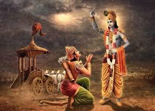
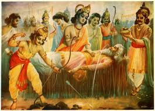
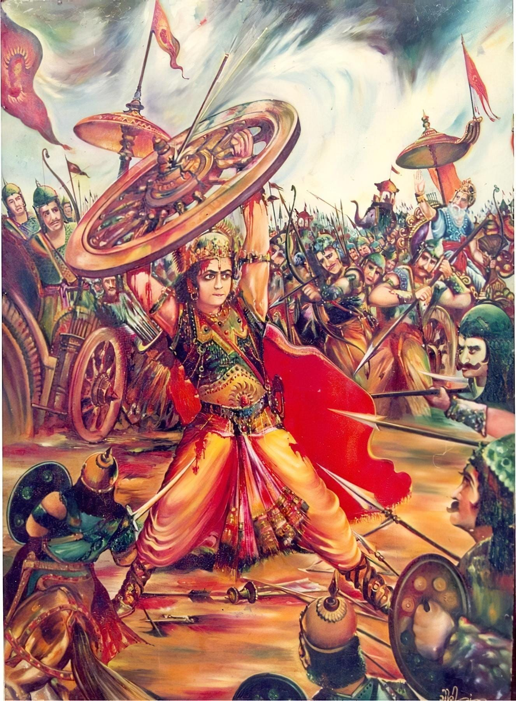
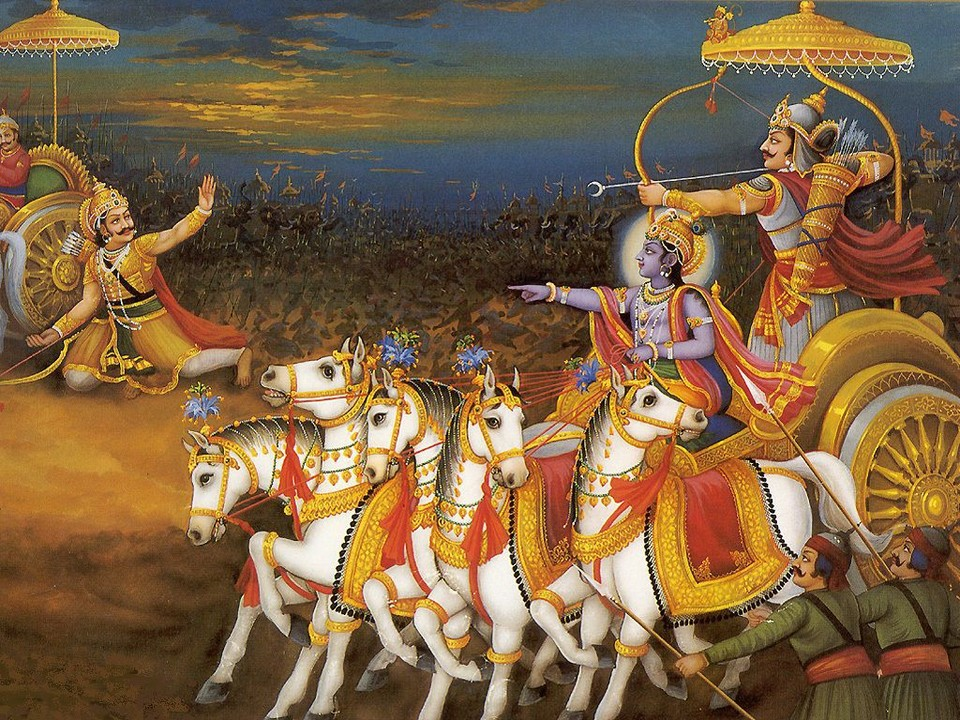
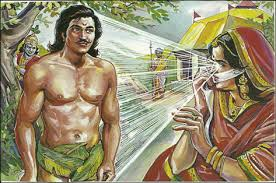
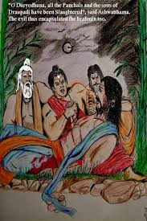

The Kauravas and the Pandavas began to prepare for the battle. Drishtadyumna was chosen as the chief of the Pandava army. No one could match the valor of Bheeshma who was rightfully chosen to be the commander of the Kaurava army. But for Bheeshma, there was no difference between the Kauravas and Pandavas. It was not the righteous war and yet he was bound by duty to serve the king of Hastinapur. As Duryodhana approached grandfather Bheeshma to take over the command, Bheeshma laid down two conditions, “Firstly, I will not personally hurt the Pandavas but will kill only their soldiers. Secondly, I would not like Karna to come to the battlefield as long as I am the commander.” Karna and Bheeshma held each other in contempt. Krishna was also in a similar dilemma. Which side should he join when both the Kauravas and Pandavas were equally dear to him? So when Duryodhana and Arjuna both approached Krishna to join their side, Krishna gave them the choice. He would offer his army to the one and himself to the other side. Arjuna was younger and Krishna gave him the first chance to choose. Arjuna chose Krishna while the army went to Duryodhana. Duryodhana was happy to have Krishna’s huge army of brave Yadavas on his side. When Krishna asked Arjuna, why he chose him over his army, Arjuna explained. “Your counsel is more valuable to me than an entire army.” Krishna was pleased, as he loved Arjuna so dearly. Kurukshetra was chosen as the battleground. Both armies marched towards Kurukshetra. Undoubtedly the Kaurava army was a lot larger than the Pandavas. On the chosen day, the Kaurava and Pandava armies stood face to face. Karna stayed away from the battlefield as mandated by Bheeshma. Yudhishthira, the representative of the Pandava army, came forward and paid respect to his elders, Bheeshma, Drona, Ashwathama and the other great warriors. The codes for the war were finalized and warriors from both the camps took their pledges to abide by the code. Krishna became Arjuna’s charioteer and counselor. Krishna brought Arjuna’s chariot to the front line for an overview. Seeing all his beloved relatives, including his grandfather, and his teacher Drona on the other side, Arjuna was overwhelmed with grief. He could not justify killing them in order to win the war. He dropped his weapons and refused to fight. Krishna came forward and taught him how the righteous path was not always an easy one. One had to be willing to fight for what one believed to be right even if it meant sacrificing one's own life. This sermon later came to be known as Bhagvata Geeta.

Krishna said, “Arjuna, may it be known to you that man’s duty lies in performing the duty while the results should be left to God. To oppress others is a sin but to tolerate oppression is a far bigger sin. All those, whom you claim to be your relatives are none but individual souls, unrelated to you, on way to their ultimate destination of uniting with the supreme Lord, the Brahman. Pick up your weapon and fight that is what is ordained to you. Do not think of the consequences.” With Krishna’s motivation, Arjuna picked up his weapon and got ready to fight. Amidst the sound of the conch, the neighing of war-horses, the trumpeting of war elephants, and the war cries raised by the soldiers, Arjuna stepped forward to in the name of Justice. Bheeshma moved with tremendous force killing the Pandava soldiers by the thousands. In spite of all their efforts, the day ended with heavy losses for the Pandavas. This was eye opening for the Pandavas. At night Yudhishthira called a meeting of the army commander Dhrishtadyumna along with his brothers. They planned a new strategy and on the following day Bheeshma could not make as much progress. Duryodhana expected Bheeshma to win the war within a few days. Instead the Kaurava army was losing ground, as Bheeshma was totally engaged with Arjuna. It went on like this for several days and, finally, Duryodhana lost his patience. He taunted Bheeshma as being too old to fight a war. Bheeshma admitted that the Pandavas were blessed with divine powers and that, under the circumstances, he was doing his best. He promised to conclude the war in the next few days or to leave the battlefield. On the tenth day of battle their seemed no end in sight. The Pandavas were worried. At the rate that they were loosing soldiers, they would not be able to hold out too long against Bheeshma. Bheeshma was blessed with the power to choose his time of death. So, he was practically invincible. When the Pandavas were about to give up, Krishna came up with a plan. Krishna knew that Bheeshma would not fight the eunuch, Srikhandi. To Bheeshma, a noble warrior like him would consider it a disgrace to fight with a eunuch. At one point he had even proudly promised to drop his arms if such a situation ever arose. Krishna knew Bheeshma’s weakness and wanted to take advantage of this. So he asked Arjuna to keep Shrikhandi, a eunuch, in front of the chariot while fighting with Bheeshma. This would stop Bheeshma, and Arjuna could take this opportunity to immobilize him with a volley of arrows.

The plan worked and Bheeshma fell down on a bed of arrows. That was the tenth day of war. The fighting stopped so that all could pay respects to a hero of all times. As he fell to the ground, Bheeshma requested Arjuna to raise his head. Arjuna shot an arrow to give him the headrest. When Bheeshma asked for water to drink. Arjuna shot an arrow into the ground and water gushed out to quench Bheeshma’s thirst. Even Karna came to pay respect to the hero of heroes, grandfather Bheeshma, and sought his blessing. Bheeshma declared his time of death to be when the sun returns towards north or the advent of summer in the Northern Hemisphere. This falls in the middle of January. After visiting Bheeshma, Duryodhana returned to his camp and was anxious to appoint the next commander-in-chief. Karna suggested the name of Drona and all agreed. Drone had a soft corner for the Pandavas. He knew that the war was due to the ill advice that Duryodhana got from his maternal uncle Shakuni and friend Karna. But he was committed to serve the crown. After taking the command, Drona changed Bheeshma’s tactic and made a special war formation with the intention of capturing Yudhishthira. Drona underestimated the strength and cleverness of Krishna. He failed to capture Yudhishthira. During the scuffle, however, he killed Drupada, the father of Dhrithadyumna, the commander in chief. Dhrithadyumna vowed to kill Drona. The following day, Drona began to kill the Pandavas with a vengeance and yet victory was not in sight. Upon his return at the end of the day , Duryodhana charged Drona as failing in his duties to capture Yudhishthira. Drona was infuriated and promised to kill one of the great Pandava warriors on the following day or else he would give up his life. With the day break, he called for a special meeting asking his best commanders to keep Arjuna busy as he was the only one who knew how to break through his special circular array, called Chakra Beuha. Jaidratha was given the task of organizing the movement of the Beuha. Drona was confident of his victory as no one knew how to break through the Chakra Beuha, except Arjuna. Hence Drona asked all his commanders to prevent Arjuna from coming near the Beuha. It seemed the perfect plan. The Kaurva army began to march across the Pandava army with the advance of the circular array. It was like a giant wall advancing and crushing the Pandava soldiers. Yudhishthira finally asked his brothers and Abimanyu for advice. Abhimanyu said, “I only know how to enter the Byuha but I do not know how to get out.” Yudhishthira asked his brothers, Bheema, Nakul and Sahadeva to follow Abhimanyu and fight their way out. When Abhimanyu started to break through the Chakra Byuha, Jaidratha ordered to quickly close the Byuha entrapping Abhimanyu solitarily inside. His uncles could not get into the Beuha. Abhimanyu single-handed fought all the warriors. Duryodhana, Karna, Drona, Aswathama mercilessly killed the brave son of Arjuna. Abhimanyu’s death sent a current of joy in the Kaurava camp.

When Yudhishthira got the news, he felt responsible for the death of Abhimanyu.. Arjuna had not heard as yet of his valiant son’s death until the end of the day. He immediately broke down and fell senseless on the ground. It was an unjust fight. The code of the war called for a fair fight between two soldiers and not a ganging up against a single soldier. Arjuna vowed to kill Jaidratha, the person who had plotted the Chakra Beuha. He swore he would either kill Jaidrata the next day before the sunset, or else, he would kill himself. When Jaidratha heard of Arjuna’s vow, he wanted to run away from the battlefield. Drona assured him that he would make such a Byuha next day, keeping him in the center of the Byuha that Arjuna would not able to get to him. All the warriors of the Kauravas were also alerted that the following day might prove to be the decisive battle. If Arjuna could not kill Jayadratha, he would kill himself and thus the Kauravas would be able to get rid of one of the most powerful warriors of the Pandavas. The fighting resumed the next day. Arjuna penetrated into the Byuha but was unable to reach Jaidratha until close to sunset. Krishna was alarmed. “Arjuna it seems that you will not be able to get to Jayadratha before sunset.” Krishna said, “Let us work jointly and when I will give you the cue, you will get your last chance to kill Jayadratha.” Soon Krishna created an illusion by which the sun set on the west and the Kaurava army began to rejoice, relaxed in their effort to resist Arjuna any longer. Krishna asked Arjuna not to loose his only opportunity to kill Jayadratha. Arjuna lost no time and Jayadratha was beheaded. Soon Krishna removed his illusion and the Kaurava army was surprised to see that the sun was still up. They realized that Krishna had tricked them and the Pandava army rejoiced. Duryodhana was furious and blamed Drona for not being able to keep his promise and, therefore, he should now step down. Drona promised to end the war the next day by killing Arjuna. Krishna was alerted. He conferred with the Pandavas and revealed a secret that would allow Arjuna to win against Drona. “Drona once promised to himself that he would stop fighting if his only son Aswathama was killed in the battle field. As Aswathama was practically invincible, Krishna would have to trick him in to believing this. Yudhishthira would have to tell a lie that Ashwathama was dead. As Yudhishthira never told a lie, Drona would believe him. Drona would stop fighting and Drithadyumna would get the chance to behead Drona..” On the following day, Drona attacked Arjuna, his former student. Arjuna successfully defied his attack and fought with equal strength. When the time came to act on Krishna’s plan Yudhishthira was hesitant to lie to Drona. Bheema acted promptly. He killed an elephant with the same name Ashwathama and Yudhishthira informed Drona that Aswathama is dead without clarifying that it was not his son but an elephant. As soon as Drona dropped his arms, Dhrishthadyumna beheaded him and Drona was dead. On the other side of the battlefield Bheema killed Dushashana to fulfill his vow for insulting Draupadi. Ashwathama hearing of his father’s death at the end of the day was furious and promised to kill Drishthadyumna the next day to avenge his father's death. Karna was chosen as the next commander in chief of the Kaurava army and he took over the command with great zeal. His superior fighting skills completely baffled the Pandava army and this ended with great losses for the Pandavas. Bheema called his son Ghatotkacha to fight for the Pandavas. Ghatotkacha attacked the Kauravas at night creating an illusionary air. Duryodhana asked his army to put on the light and continue to fight through the night. The code of war, as agreed upon, was broken. The weapons from Gatotkacha were coming from the sky but no one could locate Gototkacha. The army fled in panic and Karna could not get them back to fight. Finally, Duryodhana used up his most powerful weapon, Brahmastra, which he was holding to kill Arjuna. When Bheema heard of his son’s valiant death, he broke down. Krishna said in consolation, “Bheema, you should be proud of your son’s valiant death. Single handedly, he pushed back the Kaurava army. He has also sacrificed his life to save Arjuna otherwise Brahmashtra would have surely have killed him.” The army mourned the death of Gatotkacha and prepared themselves to fight again on the following day. It was the day when Karna was in command of the Kaurava army. He decided to have his final battle with Arjuna that day. Arjuna was also ready for him. The armies of the Kaurava and Pandava were skeptical of the outcome as both were equally powerful. When Karna proceeded towards Arjuna on the battlefield, Yudhishthira came in between and Karna cut his weapons in pieces. He spared Yudhishthira’s life as he had promised to Kunti. Karna soon stood face to face with Arjuna. Suddenly Karna’s charioteer was killed and one of the chariot’s wheels broke down. Karna requested Arjuna to stop fighting while his wheel was fixed. Karna was unarmed and it was unethical for Arjuna to attack Karna in that situation. But Krishna spoke otherwise, “Karna, this war itself is unethical. It will be foolish of Arjuna not to take this opportunity to kill you.”

Krishna encouraged Arjuna to kill Karna instantly. Thus Karna was killed mercilessly in the hands of his brother Arjuna. The Kaurava army began to flee away from the battlefield. Duryodhana was shocked to hear of Karna’s death. He felt helpless. He could not find anyone to replace Karna or get his army organized. His vanity did not prompt him to accept defeat . So he chose to run away from the battlefield along with his maternal uncle Shakuni. Sahadeva located Shakuni and killed him but Duryodhana escaped. It was the sixteenth day of war. The battlefield was nothing but heaps of corpses. On the eighteenth day of the Mahabharata war, Duryodhana was missing and the Kaurava army chose to surrender. Duryodhana was finally located inside a tank from where he was pulled out. Bheema challenged Duryodhana to a mace fight. Duryodhana was noted for his mace fights. Everyone witnessed the great fight between Bheema and Duryodhana, which went on for many hours until Krishna convinced Bheema to hit Duryodhana on his thigh in order to win. Hitting an enemy below the navel was not allowed in a fair mace fight. But Bheema took Krishna’s advice thus he kept his vow of breaking Duryodhana's thigh to punish him for insulting Draupadi by asking her to sit on his lap after that ill-fated dice game. The Pandavas then left Duryodhana in the battlefield and started to return to their camp. Before their departure, the Pandavas thanked Krishna for bringing victory to them through his valuable advice. Although the war was over on the eighteenth day, three warriors of the Kauravas were still missing at large – Aswathama, Kripacharya and Kritaverma. Kripacharya and Kritaverma accepted their defeat and went to the forest to spend their time in prayers. Ashwathama, however, desired revenge. He planned to wipe out the Pandava family. The Pandavas were on their way home after the war. Ashwathama stealthily entered the camp at night, killed the guard and then killed all of Draupadi’s sons , one by one, in cold blood. Then he came to Duryodhana before the daybreak where he was lying in pain. He described the heinous crime that he had just committed . Duryodhana breathed his last breath and Aswathama fled into the forest. When the Pandavas returned to camp, they witnessed the crime incurred by Aswathama. Draupadi was lost in grief and bewailed loudly. Consoling her to be pacified, the five Pandavas set out in search of Ashwathama. He was soon located but Draupadi asked the Pandavas to release him as he was the son of their guru Drona. Thus at the end of the war, there was no one left to claim the throne of Hastinapur after the Pandavas, except the unborn baby of Uttara, the son of Abhimanyu.

